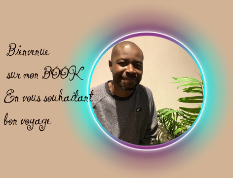
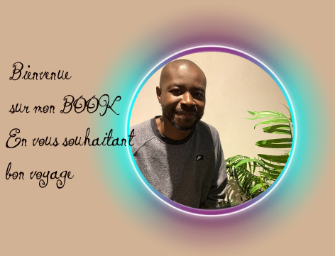

Portefolio
Abdoulaye N'DIAYE
Web Developeur & Technicien I-T
Web Developeur & Technicien I-T
Après avoir passé cinq années enrichissantes en tant que technicien IT, j'ai décidé de poursuivre ma passion pour la technologie en me formant au développement web. J'ai récemment complété une formation intensive en développement web full stack, qui m'a permis d'acquérir des compétences en front-end et back-end
 Depuis début 2022 Développement Web Ecole CCI , à
Depuis début 2022 Développement Web Ecole CCI , à
Réalisation de la boutique web dans le respect des maquettes fournies par le pôle graphisme.
Intégrations valides W3C en HTML5 et CSS3 pour la réalisation d'une boutique en ligne. VUEJS et Symfony
Mise en place de la statégie de responsive web design pour un accès lisible sur tous les supports (mobiles et tablettes).
Montage, démontage de pc bureautique et portable, ainsi que l'apprentissage de certain logiciel et compréhension des bais
Mise en place d'une application interne permettant aux employés de gérer leur planing et travail.
Mes prémiere debut de réglage Mobiles et Pc.
bonheur qui apporté
Et maintenant ces des passion tellement grande que je ne peux m'arrêter de coder.
J'aime, J'aimer et j'aimerai.
Texte de la carte 1.
Texte de la carte 2.
Texte de la carte 3.
Texte de la carte 4.
The Shrine of Daring is found in the city of Vivec, in the Temple District, along the western wall of the High Fane, the great Temple of Vvardenfell. When you address the shrine, it is customary to leave behind a Potion of Rising Force. Suitable potions may be purchased from the Temple. Homemade potions are not acceptable.
.gallery .resizer RESIZE SCREEN .items - for (i=0; i<36; i++) .item .paginationLong after Lord Nerevar and the Tribunal triumphed over Dagoth Ur, the people wished to build a monument to the heroes of that war. Vivec thanked them, but said that it would be better to dedicate a monument not only to the glorious heroes, but to all people, great and small, who suffered and died in the war. It became the custom to make offerings here, either in thanks of our good fortune, or for those less fortunate.
The Shrine of Generosity is on the top steps of Vivec's Palace, the southernmost Canton of Vivec City. The customary donation for those in good fortune is 100 gold.
In a battle with Mehrunes Dagon, Vivec gave his own silver longsword to the Daedra Lord rather than dishonor himself by fighting an unarmed foe. This so impressed the Dremora, the most honorable and chivalrous of Mehrunes Dagon's Daedric servants, that they now share a bond of respect and courtesy with the followers of the Tribunal, though we must never forget that they are our enemies.
The Shrine of Courtesy is found in the heart of the Puzzle Canal, a labyrinth beneath Lord Vivec's Palace in the city of Vivec. The journey though the Puzzle Canal can be confusing and it is suggested that common pilgrims carry a scroll of ALMSIVI Intervention in case they get lost. The Dremora Krazzt is found in the center of the Puzzle Canal, and will accept a plain silver longsword if spoken to with courtesy. After Krazzt accepts the sword, pilgrims must read the inscription on the triolith.
Near the altar is Vivec's Ash Mask. In the Days of Fire when Dagoth Ur first crept back into Red Mountain and awakened it, Vivec led refugees here as they fled the ash and blight. Weary, they rested here a while. When Vivec awoke, he found himself and all his followers encased in casts of grey ash. Frozen like a sleeping statue and unable to free himself or help his people, Vivec was filled with despair. Vivec's tears weakened his ash cast. He tore the ash from his perished followers, breathed life into their lungs, and cured them of the blight. This is Vivec's heroism -- his tender heart provides strength when his might fails.
The Shrine of Justice is guarded within the Gnisis Temple, in the village of Gnisis, northwest by road from the town of Ald'ruhn. When you address the shrine, it is customary to leave a potion of Cure Common Disease as a token of your respect for justice. Suitable potions may be purchased from Temple. Homemade potions are not acceptable.
Within the Koal Cave, Vivec fought a battle with Ruddy Man, the father of the Dreugh. When he defeated Ruddy Man, Vivec spared his life, on the condition that Ruddy Man and his children would give up their tough hides to serve as armor for the Dunmer.
The Shrine of Valor is inside the Koal Cave, a cavern on the seacoast west of the ancient stronghold Berandas and south of Gnisis. The cave mouth faces south, towards the sea, and is marked by a large natural arch of stone. The region is wilderness, and finding the cave mouth can be difficult. Dreugh within the cave itself are fearsome enemies; only experienced and capable adventurers should attempt to re-enact the epic battle with the dreugh in the cave. Dreugh wax may be bought at the Temple in Gnisis. When you address the shrine, it is customary to leave a portion of dreugh wax as a token of Vivec's victorious struggle with Ruddy Man.
Je tiens à exprimer mes sincères remerciements à la Chambre de Commerce et d'Industrie (CCI) ainsi qu'au Centre de Formation Professionnelle des Adultes (AFPA) pour leur soutien inestimable tout au long de mon parcours. Leur engagement et leur expertise ont joué un rôle crucial dans mon développement professionnel, en m'offrant des opportunités d'apprentissage exceptionnelles. La CCI a été un partenaire essentiel, fournissant des ressources précieuses, des conseils stratégiques et un environnement propice à l'acquisition de compétences professionnelles. Leur dévouement envers le développement des entreprises et des individus a eu un impact significatif sur ma croissance personnelle et ma compréhension du monde des affaires. Mes plus sincères remerciements vont également au Centre AFPA, dont le programme de formation exceptionnel m'a permis d'acquérir des compétences spécifiques et pertinentes pour mon domaine d'expertise. Les formateurs dévoués et les installations de pointe ont créé un environnement d'apprentissage stimulant, me préparant de manière exhaustive pour les défis du monde professionnel. Ces remerciements ne sont qu'une petite expression de ma gratitude envers la CCI et l'AFPA. Leur impact sur ma carrière et ma vie ne sera jamais sous-estimé. Merci pour leur soutien continu, leur encouragement et leur engagement envers l'éducation et la formation professionnelle.
The Shrine of Pride is found within the Ghostfence, just northeast of the Ghostgate itself. The safest route to Ghostgate is along the Foyada Mamaea, a volcanic ravine running from the top of Red Mountain southwest to its end just below Balmora. An old Dwemer bridge crosses the foyada near Fort Moonmoth. A pilgrim may follow the Foyada Mamaea all the way to Ghostgate. Any journey inside the Ghostfence is dangerous, but even the most timid pilgrim should be safe, so long as he does not stray too far from the Ghostgate and flees from any minions of Dagoth Ur. When you address the shrine, it is customary to leave a soul gem in remembrance of our ancestors who were bound to the Tribunal's service.